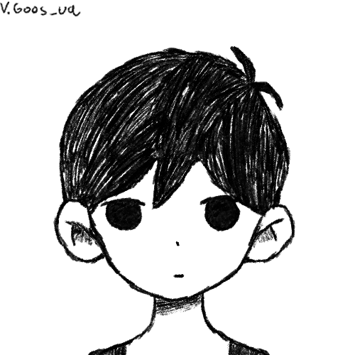
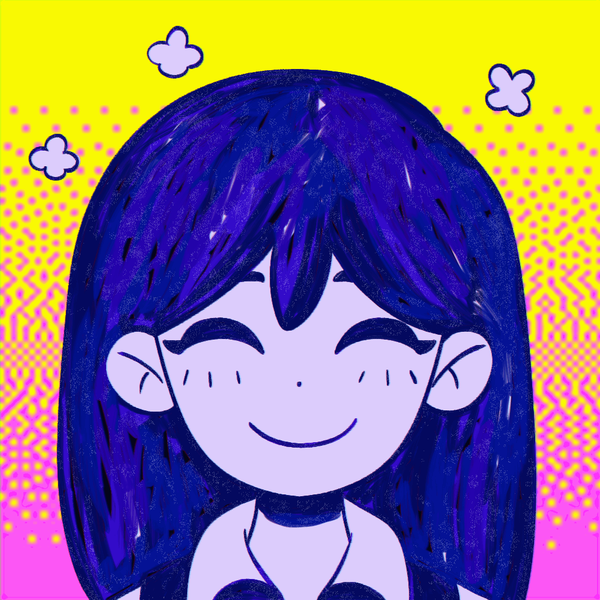
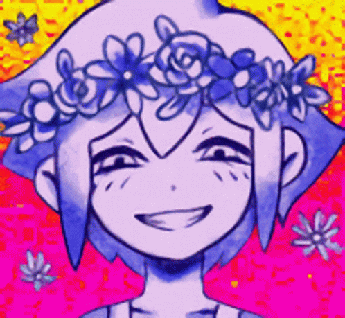
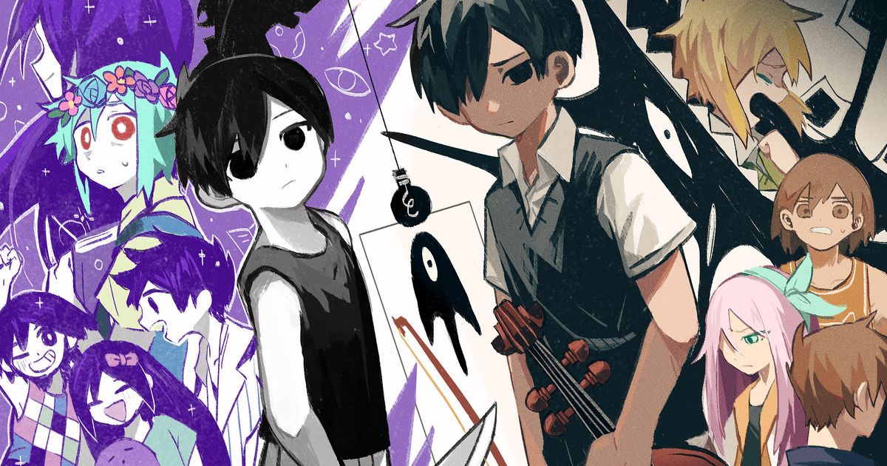

Bienvenidos a Omori
Omori es un videojuego de terror psicológico y surrealista que se basa en la confrontación de los miedos y ansiedades de un protagonista aislado.
Pagina oficial
Sunny (Omori)
Chico blanco de cabello negro y corto con una camiseta de color negro sin mangas, pantalones cortos blancos a rayas negras y calcetines negros y largos. Tiene un gato negro en su habitación. Es el menor del grupo.
Escucha un fansong de sunny(Omori)!
Mari
Chica alta de cabello con chasquilla morado y largo, y uniforme escolar. Es la hermana mayor de Sunny.
Escucha un fansong de Mari!
Basil
Chico de cabello verde y mediano, con una camiseta verde oliva claro y una jardinera de mezclilla. Su cabeza está adornada con una corona de flores.
Escucha un fansong de Basil!
¿Por que
comprar Omori?
OMORI es un videojuego de rol creado por la desarrolladora independiente OMOCAT que salió a la venta en diciembre de 2020. Se trata de un videojuego del género terror psicológico y surrealista que explora temas como la ansiedad, la depresión y el trauma. El jugador controla a un chico hikikomori, llamado Sunny, y a su alter-ego en el mundo de los sueños, Omori; que exploran ambos mundos con el objetivo de vencer sus miedos y descubrir secretos: con las emociones en el punto central de la narrativa. El videojuego, basado en diferentes conceptos que la artista principal había desarrollado desde 2011, sufrió diversos problemas durante su realización. Seis años después de su campaña de crowdfunding, que comenzó en 2014, el videojuego se publicó para Microsoft Windows y macOS, con futuros planes para su salida a la venta en Nintendo Switch, PlayStation 4 y Xbox One. Omori recibió críticas positivas, especialmente por el aspecto artístico y diversos elementos de su narrativa, banda sonora, y representación del trastorno mental.
